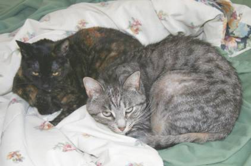

|
2009 Low-Key Hillclimbs Overall Results |
|  |
| Can't wait for the next results! |
Thanks to our great volunteers for making this series succeed!
pl # rider team category week1 week2 week3 week4 week5 week6 week7 week8 week9 overall 1 6 Bill Bushnell Low-Key Hybrid 100.00 100.00 100.00 - - 100.00 100.00 100.00 100.00 500.00
pl # rider team category week1 week2 week3 week4 week5 week6 week7 week8 week9 overall 1 40 Justin Lucke LGBRC 35+ 128.32 131.97 - - 131.77 --V-- 132.03 132.39 129.08 660.21 2 163 Carl Nielson Sr's & Mr's of No Mercy 45+ - - 119.55 - 130.23 123.80 128.19 127.81 --V-- 637.53 3 71 Greg McQuaid San Jose Bike Club 35+ 120.84 --V-- 112.29 - 126.41 - 124.92 126.99 127.72 632.54 4 18 Tim Clark Metrigear 40+ --V-- - 112.50 119.66 127.74 121.56 118.91 127.32 - 620.36 5 1 Dan Connelly Low-Key 40+ --V-- --V-- 116.63 120.71 124.73 - --V-- 121.57 124.16 617.43 6 28 Ciaran Byrne 123.24 125.92 120.15 120.37 127.01 - - - - 616.69 7 101 Mark Edwards Bike Trip 45+ 121.82 121.91 117.89 120.16 124.10 - - 119.31 128.47 616.46 8 7 James Porter Western Wheelers 3 118.67 118.48 115.27 114.89 122.78 --V-- 122.28 117.83 122.82 608.18 9 129 Ammon Skidmore Team Roaring Mouse 30+ 114.06 124.93 117.78 120.19 - - 128.88 - - 605.84 10 58 Clark Foy Metrigear 45+ 120.98 121.79 115.61 120.05 118.84 --V-- 121.11 - - 604.92 11 201 Rune Dahl Western Wheelers 45+ 121.96 118.37 - --V-- - 118.79 118.80 114.31 120.45 600.01 12 283 Geoff Drake Bike Trip 50+ - 115.66 114.77 118.40 122.90 - - 120.10 122.87 599.93 13 156 Rich Hill LGBRC 40+ 121.54 120.06 114.06 --V-- 117.48 118.19 - - 118.18 597.45 14 315 Tom Gardin 45+ - 116.62 109.91 117.48 121.88 121.14 116.42 119.60 114.84 596.72 15 32 Nils Tikkanen Bike Trip 3 121.26 119.04 117.20 114.97 - - 113.52 --V-- 117.42 593.65 16 93 Thomas Novikoff Webcor/Alto Velo 2 123.24 120.63 113.14 113.41 123.12 - - - - 593.53 17 144 Andy Brisnehan Western Wheelers 50+ 109.56 117.38 111.87 115.87 120.59 114.68 121.80 115.51 117.74 593.39 18 151 Doug Philippone Palantir 35+ 118.94 120.52 109.96 115.30 123.38 - - - - 588.09 19 80 Bill Davis Google 25-29 117.74 111.97 - 115.30 - 117.45 116.65 116.18 --V-- 585.04 20 98 Bruce Gardner Sr's & Mr's of No Mercy 35+ 114.68 115.66 107.38 105.92 115.83 115.38 115.69 111.38 - 577.23 21 23 Ron Brunner Low-Key Commuter 116.06 - 110.98 111.67 - 112.76 114.32 - 117.06 571.87 22 33 Martin Hyland Western Wheelers 50+ 111.65 104.90 108.90 102.82 113.96 108.36 114.12 --V-- 114.98 568.39 23 259 Matt Wocasek Bike Trip 3 - 113.89 112.18 112.78 114.36 - - 110.94 - 564.15 24 192 Michael Simos LGBRC 35+ - 111.77 - 110.20 109.85 108.42 114.25 109.12 115.61 561.69 25 120 Peter Mehlitz 45+ 110.48 107.03 - 107.14 111.97 105.46 111.95 104.21 115.10 556.64 26 291 Tim Sawyer Bike Trip 45+ - 109.16 105.02 109.23 114.15 - - 109.72 112.17 554.43 27 42 Nick Pelly Google 106.05 108.51 - - 107.16 105.57 111.00 - 115.47 548.18 28 94 Nathan Cauffman UID 30+ 107.89 - - 104.05 109.63 110.20 111.46 - 107.98 547.15 29 316 Christian Paquet Doogie 50+ - 105.60 - 101.90 107.96 111.25 - 107.07 108.39 540.28 30 45 Sean Broeder Silicon Valley Triathlon 45+ 107.89 - 102.71 103.56 107.46 108.36 --V-- - 106.25 537.46 31 276 Adam Brinkman 25-29 - 107.76 103.92 107.67 - - 108.30 - 109.20 536.86 32 74 Benoit Pelczar Bike Trip 35+ 108.16 107.40 - 104.19 - - - 107.07 109.48 536.30 33 113 Kevin Comerford Commuter - - - - 105.26 105.14 109.89 103.45 110.99 534.73 34 59 Scott Martin Bike Trip 50+ 104.68 107.12 101.58 100.62 - 108.48 - 102.76 109.50 532.54 35 96 Phil Dubach Western Wheelers 35+ 104.27 107.12 100.38 99.95 106.57 --V-- 97.34 98.49 100.64 523.25 36 197 Ryan Gibson Google - - 104.29 - 105.33 102.61 106.37 --V-- 102.19 523.25 37 43 Joseph Sullivan 35+ 103.30 - 101.53 104.49 108.08 - 102.01 - - 519.41 38 115 Martin Hampton Pen Velo/Pomodoro 45+ 104.42 104.73 102.40 100.65 105.29 - 101.60 - - 518.45 39 136 Fred Egley Dos Egley's 45+ 102.45 98.59 98.76 96.89 98.81 - 101.96 106.66 107.55 517.44 40 161 Mike Salameh 55+ 107.01 - 96.95 101.35 105.77 105.04 - - 91.15 516.12 41 287 Stewart Thompson Pen Velo/Pomodoro 5 - 104.73 100.76 - 102.72 103.01 104.73 - - 515.94 42 79 Gino Cetani Western Wheelers 35+ 103.30 106.49 96.87 100.05 103.25 100.68 101.99 - - 515.71 43 109 Shance Ordell Western Wheelers 35+ 99.18 - 100.97 99.77 103.87 - 108.97 97.82 - 512.77 44 56 David Vrane SLACer 45+ 100.79 97.76 98.03 100.07 99.78 100.14 104.43 98.69 105.56 510.99 45 75 Dan Cervelli Palantir 96.29 98.83 90.65 96.30 101.00 - 105.46 - 106.21 507.80 46 73 Vince Cummings 99.83 98.67 93.24 - 87.89 95.60 103.50 100.58 104.50 507.08 47 114 Andre Swart Ryro Junior 99.09 99.45 - 99.71 101.65 100.34 - 100.33 103.19 505.21 48 87 Chuck Spiteri Pen Velo/Pomodoro 50+ - - 93.60 101.40 105.88 102.36 - - 100.21 503.45 49 137 Neal Herman Spike the Wonder Dog 50+ - 102.52 - 96.33 104.48 - 98.35 100.43 - 502.10 50 402 Bill Preucel Sr's & Mr's of No Mercy 45+ - - - 97.61 101.55 98.72 - 101.76 102.21 501.84 51 49 Eric Balfus LGBRC 125.88 124.68 - 122.12 128.34 - - - - 501.02 52 85 John Carrino Palantir 25-29 95.16 101.53 - 94.95 97.90 97.89 105.85 - - 498.32 53 29 Thomas Rabedeau SLACer 50+ 97.80 98.44 93.35 95.30 102.28 - 101.58 - - 495.40 54 140 Gary Shockey 35+ 101.66 102.18 94.05 98.90 98.06 - - - - 494.85 55 269 Jeff Shute Google 30+ - 98.44 95.25 96.18 - 97.84 99.19 94.70 100.37 492.03 56 132 George Junour Santa Cruz - - 95.74 94.31 101.10 - - 96.54 102.67 490.36 57 111 Gary Griffin Bike Trip 55+ 97.26 - 91.34 --V-- - 95.38 97.45 - 98.84 486.17 58 155 Larry Klein Jerry 45+ 91.93 - - - 96.14 95.69 102.63 - 96.85 483.25 59 347 Matt Beadon 30+ - 94.82 94.42 - 99.53 94.35 - 99.67 - 482.78 60 35 Stephen Fong San Jose Bike Club 40+ 94.31 96.78 89.09 93.82 95.82 --V-- 96.59 94.48 95.15 480.44 61 69 Nic Brummell Atlas 45+ 93.23 90.80 90.20 91.51 96.07 - 97.03 94.34 96.97 477.64 62 214 Brian Lucido Sr's & Mr's of No Mercy 30+ - 131.84 - - - - 110.31T 103.51R 129.31 474.97 63 54 Barry Burr Two legs to stand on 50+ 91.69 - --V-- 90.95 93.38 - 95.01 92.33 97.53 472.82 64 146 William Von Kaenel LGBRC 50+ 97.89 96.78 - 92.40 - 94.52 - 90.32 - 471.91 65 139 Laurent Pfertzel 45+ 118.87 117.71 - 116.27 - 118.86 - - - 471.71 66 324 Paul Melville Doogie 55+ - 92.94 93.06 93.36 95.73 93.08 - - - 468.17 67 122 Mark Powers Pen Velo/Pomodoro 50+ - 92.66 90.10 81.32 92.34 88.54 95.39 91.78 95.46 467.63 68 332 Jens Weber Doogie 30+ - 91.59 93.16 93.24 96.83 90.62 - - - 465.44 69 401 Jacob Berkman - - - 107.44 - 117.39 116.72 122.84 - 464.39 70 363 James Dudley - 88.38 84.57 83.18 89.30 92.96 93.43 96.63 - 460.71 71 64 Han Wen 40+ 89.52 92.26 89.43 88.23 92.25 81.17 89.62 87.39 90.27 453.91 72 91 Patrick Callahan Western Wheelers 40+ 92.33 90.99 - 87.49 - 91.01 91.50 56.49T - 453.33 73 38 Thomas Preisler LGBRC 50+ 88.10 89.64 83.74 87.00 90.11 - 90.09 85.08 86.68 444.94 74 243 Jeff Farnsworth San Jose Bike Club 50+ - 112.87 - 110.41 110.62 109.16 - - - 443.05 75 138 Carmelo Rios Plus 3 50+ - 108.04 - 108.03 113.21 - - - 112.46 441.74 76 25 Carl Butler Sr's & Mr's of No Mercy 50+ 111.77 69.43 - 105.47 --V-- 63.52 --V-- - - 437.74 77 70 Garry Chinn Silicon Valley Triathlon 92.90 90.80 - 88.50 - 83.14 - - 82.24 437.58 78 157 Joe Fabris Plus 3 50+ - 107.49 103.43 - 114.98 - 109.06 - - 434.95 79 244 Michael Barnes - 107.76 106.28 107.80 - --V-- - - --V-- 429.13 80 51 Richard Contreras 50+ 83.34 - 81.21 - 83.46 87.10 --V-- 82.44 88.38 427.84 81 107 Richard Allen Sr's & Mr's of No Mercy 60+ - 85.11 82.30 81.06 - - 88.46 - 88.87 425.81 82 420 Dave Rossow Webcor/Alto Velo 35+ - - - 104.70 - 99.86 112.14 - 107.03 423.72 83 125 Jerrick McCullough 40+ 83.34 86.27 81.62 84.18 86.59 - - - - 422.00 84 119 Gary Swart Ryro Senior 79.19 84.94 - - 84.59 81.48 - 83.47 85.68 420.16 85 21 Kley Cardona ACTC 45+ 77.22 84.14 - 79.47 - 79.44 85.37 82.33 86.76 418.08 86 251 Christopher Olson Google 5 - 86.68 82.61 80.73 82.26 80.23 - 78.63 85.04 417.32 87 20 Alan Weatherall San Jose Bike Club 45+ 4 104.27 102.77 - - 104.76 - - - 102.21 414.00 88 413 John Richardson Over The Hill 55+ - - - 101.10 - 101.81 105.71 - 105.23 413.84 89 24 Dennis Pederson Bike Trip 45+ 104.53 - - - 103.12 - 103.07 101.09 - 411.81 90 100 Eric Murray Webcor/Alto Velo 45+ 104.27 --V-- - 99.57 --V-- - - - 102.67 408.67 91 323 Bart Johnson SLACer 40+ - 100.80 99.09 103.22 102.36 - - - - 405.46 92 409 Mike Ahern LGBRC 40+ - - - 75.98 66.85 - 87.38 84.29 88.71 403.20 93 180 Dan Brehmer SLACer 40+ 99.09 - 99.62 - 101.85 - 99.78 - - 400.34 94 66 Christopher Phipps Western Wheelers 35+ 135.22 135.08 - 128.88 - - - - - 399.18 95 117 Bob Corman Spike the Wonder Dog 50+ - 80.45 79.69 76.91 82.53 - 79.34 77.11 76.88 399.12 96 89 Bob Gumaer UID 50+ 77.96 78.89 - 77.52 83.87 - 70.87 - 75.17 393.41 97 371 Jeroem Meiier 35+ - 83.98 77.26 - 75.78 70.28 77.21 76.81 71.33 391.04 98 126 John Conklin 40+ 76.94 77.48 74.67 73.74 - 69.26 79.02 72.88 77.73 385.84 99 253 Chris Chang Old & slow 45+ - 81.59 - 72.66 - - 78.70 76.78 71.73 381.47 100 196 Dominic Pezzoni 20-24 126.03 - - 119.20 126.14 - - - - 371.37 101 400 Chris Toshok RAMROD 5 - - - 89.68 - 87.61 96.25 93.46 - 366.99 102 247 Keijiro Ikebe Livestrong Livestrong - 93.28 - 87.49 92.13 - 91.15 - - 364.05 103 249 Chris Ott Zenn Racing 40+ - - - - 116.51 - 122.50 - 123.03 362.04 104 174 Keith Devlin Western Wheelers 60+ - 90.60 - - - 87.03 93.41 - 89.85 360.90 105 355 Goeric Daeninck - 115.87 113.68 - - - 116.89 - - 346.44 106 110 Shon Grabbe San Jose Bike Club 35+ 117.09 111.18 - - - - - 115.44 - 343.71 107 234 Evan Paull Webcor/Alto Velo 25-29 - - 109.50 - 117.93 108.48 - - - 335.91 108 11 Doug Simpkinson Webcor/Alto Velo 35+ 69.32 --V-- 62.04 --V-- 65.03 62.18 69.49 58.81 - 332.51 109 226 Brian Edwards Rocky Mounts/Pearl Izumi 30+ - - 107.00 108.74 - 115.31 - - - 331.05 110 44 Michael Chasse Bike Dads 45+ 109.00 - 108.21 109.17 - - - - - 326.38 111 414 David Quincy Sponge Bob - - - 108.25 - 104.14 - - 105.93 318.32 112 410 John Walker Google 45+ - - - 111.36 92.85 112.70 - - - 316.90 113 232 Bob Williams Over The Hill 50+ - - - - 99.18 104.04 104.78 - - 308.00 114 306 Joseph Maurer SF Randonneurs 60+ - - - - 77.94 - 76.91 75.25 68.87 298.96 115 26 Ben Stern Team Roaring Mouse 30+/Fixed 100.21 98.83 98.31 - - - - - - 297.35 116 268 Vince Valvano - 96.71 94.38 95.07 - - - - - 286.16 117 185 Pete Petroski Western Wheelers Beyond - 94.25 --V-- - - - - - 92.77 280.53 118 154 Eric Sorenson Bikeforums.net 35+ - 87.95 - - 90.94 - - - 88.08 266.97 119 57 John Kastel Death Valley 45+ - - - - 86.88 91.29 - 88.24 - 266.42 120 338 George Lee - - - - 89.81 86.20 - 89.27 - 265.28 121 171 Scott Barry 40+ 82.78 - - 89.07 90.04 - - - - 261.90 122 63 James Deitrich Team Tubby MTB 75.56 95.39 - - - - 88.54 - - 259.50 123 142 Jeff Swan Spike the Wonder Dog 40+ - 86.21 81.99 - 82.03 - - - - 250.22 124 516 Tom Roberts San Jose Bike Club 40+ - - - - - - 122.61 - 124.78 247.39 125 116 Kenneth Fong Team Rwanda 45+ 80.95 82.55 80.36 - - - - - - 243.85 126 535 Jim Tappan Self 50+ - - - - - - 83.13 81.53 77.72 242.37 127 240 Jerry Hitchcock 50+ - - - - - 74.05 82.46 - 83.31 239.82 128 322 Aaron Thompson Spike the Wonder Dog - - - - 76.34 - 83.20 - 79.35 238.89 129 90 Tim Sutton Plus 3 45+ 81.89 77.96 - - - 73.81 - - - 233.66 130 179 David Nader Pen Velo/Pomodoro 35+ - 117.49 111.03 - - - - - - 228.52 131 522 Steve Fielding Sr's & Mr's of No Mercy 45+ - - - - - - 112.57 - 112.17 224.75 132 215 Chris Heisterkamp 30+ - - 108.46 - - - 112.98 - - 221.44 133 53 Jim Langley Bike Trip 55+ 109.22 109.26 - - - - - - - 218.48 134 318 Wink Saville Google 60+ - - - - 73.91 - 71.85 71.93 - 217.70 135 223 Barrett Ausman Webcor/Alto Velo 4 - 112.57 103.97 - - - - - - 216.53 136 619 Klaus Fleischmann 40+ - - - - - - - 108.11 108.23 216.34 137 300 Liam Stewart Team Roaring Mouse - 106.76 - - - - - - 108.13 214.89 138 97 Wajtek Poppe Out Of Shape Dad - 104.64 106.62 - - - - - - 211.26 139 263 Nicholas Konwest Fresh Fish - 104.47 - - - - - - 104.86 209.33 140 212 Joe Karbowski - 107.22 101.15 - - - - - - 208.36 141 78 Brian Sterling 104.27 101.77 - - - - - - - 206.04 142 512 Russ McCrary Sr's & Mr's of No Mercy 50+ - - - - - - 103.13 - 101.17 204.30 143 176 Amir Weiss LGBRC 35+ 96.82 - - - - - - - 105.84 202.65 144 823 Peter Tapscott Webcor/Alto Velo - - - - - --V-- - - 101.26 202.52 145 227 Sandor Dornbush Google 5 - 100.56 - - - - 101.43 - - 201.98 146 150 Daniel Talayco Two wheel tango Goat Ibex 103.35 - - - 98.18 - - - - 201.53 147 607 Rick Ferrell 50+ - - - - - - - 100.89 100.57 201.45 148 523 John Malloy Grizzly Peak Cyclists 40+ - - - - - - 101.88 - 99.56 201.45 149 299 Michel Williams Sr's & Mr's of No Mercy - 101.20 - - - - 100.22 - - 201.42 150 141 Franz Kelsch UltraCycle.net 60+ 102.15 - - - - - - - 97.80 199.95 151 230 Pete Dunten SLACer 45+ - - 100.00 99.74 - - - - - 199.74 152 72 Phil Alne LGBRC 40+ - - - - - 98.49 100.75 - - 199.23 153 124 Frederick Stamm Pen Velo/Pomodoro 55+ 100.17 - - - - - - - 98.79 198.95 154 181 Dirk Rohloff Plus3/Fightin' Bobas 50+ 96.02 - - - 102.85 - - - - 198.87 155 421 Patrick Keller 40+ - - - 96.31 100.22 - - - - 196.53 156 178 Octavio Camacho Plus 3 30+ - - - - 98.43 - 97.81 - - 196.24 157 381 Gregory Fuoco Democrats - - - - 97.23 - - 98.30 - 195.53 158 508 Oscar Garcia Castelli 30+ - - - - - - 99.07 - 95.97 195.04 159 340 Jan Novak Team Tubby 30+ - 93.69 - - - - 98.14 - - 191.83 160 221 Ben Stever Bike Dads 20-24 - - 94.19 - - - 97.06 - - 191.25 161 160 Mike Czepiel Apple 25-29 94.31 96.63 - - - - - - - 190.94 162 27 Loren Vorreiter Western Wheelers 40+ 92.74 96.49 - - - - - - - 189.22 163 331 Daniel Harrington SLACer 40+ - 98.06 90.38 - - - - - - 188.43 164 284 Ilyas Elkin 25-29 - 93.21 95.06 - - - - - - 188.27 165 103 Christopher Pistor 94.82 - - 92.53 - - - - - 187.34 166 195 Justin Eichenlaub Post Car Press.org 25-29 - - 90.48 - - - 94.04 - - 184.52 167 104 David Hrovatin Team Tubby MTB 53.28 62.90 - - - - 64.26 - - 180.43 168 147 Marty Beene Team Alameda 45+ - 90.54 - - - - 89.79 - - 180.33 169 130 Steve Chapel Western Wheelers 65+ 86.80 91.79 - - - - - - - 178.58 170 68 Jan Berka 88.10 - - - - - - - 88.20 176.30 171 203 Edward Abeleven UID 40+ - - - - - 88.84 84.57 - - 173.41 172 294 Duane Stephens GC Viroforte Mature - - - - 83.60 - 87.70 - - 171.30 173 86 Gerald Jeffs Cycling Systems 50+ 82.27 88.57 - - - - - - - 170.84 174 127 Cameron Beene Team Alameda Junior 14 - 86.80 - - - - 82.76 - - 169.56 175 292 Giles Douglas Google 35+ - 86.68 - - - - - 75.10 - 161.79 176 509 Miguel Angel Alvarez PROJOB 40+ - - - - - - 81.27 80.41 - 161.67 177 261 Vladimir Ivan Cyclecraft 60+ - 79.99 - - - - 81.46 - - 161.45 178 105 Mark Elstron San Jose Bike Club 5 - 79.94 - - - - - - 79.75 159.69 179 166 Tom Everman Google 50+ 76.11 76.50 - - - - - - - 152.61 180 328 Matt Slater UID 40+ - - - - 65.71 - 68.56 - - 134.27 181 521 Kevin Metcalf Specialized 45+ - - - - - - 131.65 - - 131.65 182 835 Ryan Sherlock Cycle Ways Ireland - - - - - - - - 131.31 131.31 183 241 Rusty Carter New - - - - 62.03 - 69.14 - - 131.17 184 262 Scott Frake Webcor/Alto Velo 45+ - - - - - 129.24 - - - 129.24 185 135 Swaminatha Vasudevan 40+ 67.03 - 62.16 - - - - - - 129.19 186 800 Tracy Colwell Team Colwell 35+ - - - - - - - - 127.89 127.89 187 526 Ken Gallardo Pen Velo/Pomodoro 35+ - - - - - - 126.28 - - 126.28 188 162 Jon Ornstil VOS 45+ - 123.34 - - - - - - - 123.34 189 194 Ken Spencer Western Wheelers 30+ - 123.22 - - - - - - - 123.22 190 239 Krishna Dole Mud 'n' Crud Unreformed Mt. Biker - 122.74 - - - - - - - 122.74 191 836 Colin Brown Team Kill Troubled Youth - - - - - - - - 120.81 120.81 192 112 Murray Swanson Pen Velo/Pomodoro 40+ - - 117.72 - - - - - - 117.72 193 796 Michael Robles UCSD 45+ - - - - - - - - 117.08 117.08 194 170 Raffi Jilizian Form Fitness 40+ 116.83 - - - - - - - - 116.83 195 827 Josh Powell - - - - - - - - 116.46 116.46 196 198 Fred Haubensak Silicon Valley Triathlon - - - - 115.96 - - - - 115.96 197 798 Maurice Monge San Jose Bike Club 20+ Cat 3 - - - - - - - - 115.61 115.61 198 852 Alan Nevin Thirsty Bears 35+ - - - - - - - - 115.14 115.14 199 30 Jason Butler Sr's & Mr's of No Mercy 30+ 115.05 - - - - - - - - 115.05 200 168 Andrew Evans Webcor/Alto Velo 35+ - 114.71 - - - - - - - 114.71 201 754 Yuma Koishi San Jose Bike Club Junior - - - - - - - - 114.11 114.11 202 834 Dai Sieh Webcor/Alto Velo 4 - - - - - - - - 113.27 113.27 203 505 Paul Famiglietti 2 - - - - - - 112.79 - - 112.79 204 605 Menko Johnson Pen Velo/Pomodoro 35+ - - - - - - - 112.44 - 112.44 205 839 Joe Pugliese Kahala La Grange 35+ Cat 4 - - - - - - - - 112.28 112.28 206 603 Gary Gellin Sr's & Mr's of No Mercy Runner - - - - - - - 111.88R - 111.88 207 609 Julian Sunn Santa Cruz Endurance 20-24 - - - - - - - 111.81 - 111.81 208 525 Michael Gaiman Google 5 - - - - - - 111.74 - - 111.74 209 307 Justin China 30+ - 111.57 - - - - - - - 111.57 210 224 Mike Schuster Google 40+ - - - - - 111.25 - - - 111.25 211 204 Aaron Paterson Unattached 3 - 110.11 - - - - - - - 110.11 212 308 Hayrettin Kolukisaoglu Novice - 51.85 - - - - - - 57.75 109.60 213 770 John Pidoli 45+ - - - - - - - - 109.35 109.35 214 220 Ben Weir Bikeforums.net 25-29 - 109.35 - - - - - - - 109.35 215 519 John Marshall Bike Trip 45+ - - - - - - 109.30 - - 109.30 216 187 Tom Rosencrantz Taleo 40+ - - 109.20 - - - - - - 109.20 217 199 Mark Debbage 40+ - 108.97 - - - - - - - 108.97 218 524 Bob Kipper Land Shark 50+ - - - - - - 108.28 - - 108.28 219 260 Leslie Oglesby Monterey Bay Racing Team 35+ - 107.58 - - - - - - - 107.58 220 48 Sharad Verma Commuter 106.80 - - - - - - - - 106.80 221 31 Wolfgang Hoeflich 45+ 106.69 - - - - - - - - 106.69 222 726 Bob Montague Bike Trip 45+ - - - - - - - - 106.49 106.49 223 819 Erik Salander Pen Velo/Pomodoro - - - - - - - - 106.43 106.43 224 807 Denin Sahovic LGBRC - - - - - - - - 106.37 106.37 225 774 Andrew Biscardi San Jose Bike Club Junior - - - - - - - - 105.93 105.93 226 511 Larry Broberg Bike Trip 60+ - - - - - - 105.46 - - 105.46 227 279 Troy Folkner Western Wheelers 55+ - 105.34 - - - - - - - 105.34 228 62 Gary Broeder San Jose Bike Club 55+ - 105.16 - - - - - - - 105.16 229 738 Zeke Mostov Team Swift Junior - - - - - - - - 104.55 104.55 230 788 Andy Wright IC3 35+ - - - - - - - - 104.38 104.38 231 145 Vidya Swaminathan UC Davis 30+ 104.27 - - - - - - - - 104.27 232 787 J.D. Daniels Eden Bikes - - - - - - - - 104.25 104.25 233 847 Akin Dirik Webcor/Alto Velo 40+ - - - - - - - - 104.13 104.13 234 255 John Becker Team Roaring Mouse 5 - 103.69 - - - - - - - 103.69 235 348 Winston Teear Team Tubby 25-29 - 103.52 - - - - - - - 103.52 236 501 Matt Tamel RH Villa 40+ - - - - - - 103.47 - - 103.47 237 83 Rand Hill Team Apple 35+ 103.30 - - - - - - - - 103.30 238 859 Matt Rodnick 45+ - - - - - - - - 103.25 103.25 239 205 Patrick Kenny 35+ - - 102.67 - - - - - - 102.67 240 500 Jim Wheeler LGBRC 45+ - - - - - - 102.66 - - 102.66 241 88 Jeff Loutit 102.35 - - - - - - - - 102.35 242 236 Peter Plackowski 20-24 - 102.27 - - - - - - - 102.27 243 175 David Parrish Team Roaring Mouse 35+ - - 102.14 - - - - - - 102.14 244 830 Tim Dent Team Roaring Mouse 4 - - - - - - - - 101.88 101.88 245 613 Q.P. Liu 40+ - - - - - - - 101.87 - 101.87 246 237 Kurt Liittschwager Team Tubby 45+ - 101.85 - - - - - - - 101.85 247 790 Myles Cowherd 40+ - - - - - - - - 101.64 101.64 248 302 Jake Goldfield San Jose Bike Club - - - - 101.26 - - - - 101.26 249 792 Travis Alongi Team Roaring Mouse - - - - - - - - 101.01 101.01 250 799 Don Melosh Pen Velo/Pomodoro - - - - - - - - 100.89 100.89 251 722 Jonathan Walden 45+ - - - - - - - - 99.79 99.79 252 344 Dan Rohrer Leafy Joe 45+ - - - - 99.44 - - - - 99.44 253 158 Ramon Ochoa Bikeforums.net 35+ - 99.21 - - - - - - - 99.21 254 750 Kyle Zamparglioni San Jose Bike Club Junior - - - - - - - - 98.89 98.89 255 758 Daniel Farinha San Jose Bike Club Junior - - - - - - - - 98.82 98.82 256 783 David Christiansen Bike Forums - - - - - - - - 98.63 98.63 257 229 Christopher O'Keefe - 98.52 - - - - - - - 98.52 258 503 Bob Pacenta Sr's & Mr's of No Mercy 60+ - - - - - - 98.45 - - 98.45 259 189 Donald Lee Bikeforums.net 35+ - 98.44 - - - - - - - 98.44 260 803 Ken Straub Bikeaholics - - - - - - - - 98.19 98.19 261 533 Stanley Layson Alameda Velo 40+ - - - - - - 97.90 - - 97.90 262 824 David Jevans 40+ - - - - - - - - 97.87 97.87 263 780 Michael Yamada Western Wheelers 45+ - - - - - - - - 97.47 97.47 264 529 Mike Riepe Team Tubby 40+ - - - - - - 97.20 - - 97.20 265 840 Peter Heller Old Guys Finish 50+ - - - - - - - - 96.80 96.80 266 762 Gento Kusno San Jose Bike Club Junior - - - - - - - - 96.76 96.76 267 81 Francis Cebedo MTBR.com 40+ 96.55 - - - - - - - - 96.55 268 766 Blas Garcia VMG 30+ - - - - - - - - 96.39 96.39 269 504 Adam Melenkivitz Taleo 5 - - - - - - 96.27 - - 96.27 270 250 Dirk Veenema Stanford Cycling Elite - - - - - 96.26 - - - 96.26 271 173 François Cosquer E.C.V.V.T. 40+ - - - - - 95.95 - - - 95.95 272 742 Frank Spiteri Pen Velo/Pomodoro 3 - - - - - - - - 95.44 95.44 273 802 Jay Dillon Rio Strada Racing 35+ Cat 4 - - - - - - - - 94.79 94.79 274 275 Naoto Sato 40+ - 94.68 - - - - - - - 94.68 275 422 Craig Sander 45+ - - - 94.27 - - - - - 94.27 276 848 Ruedi Brunner - - - - - - - - 94.09 94.09 277 855 Jesus Garcia San Jose Bike Club 25-29 - - - - - - - - 93.81 93.81 278 532 Warren Elliott Alameda Velo 60+ - - - - - - 93.18 - - 93.18 279 216 Steve Blain Sr's & Mr's of No Mercy 55+ 93.06 - - - - - - - - 93.06 280 706 Vincent Juarez San Jose Bike Club 4 - - - - - - - - 92.99 92.99 281 222 Chris Swenson 5 - - 92.84 - - - - - - 92.84 282 894 Oliver - 92.32 - - - - - - - 92.32 283 534 JP Frary Alameda Velo 40+ - - - - - - 92.18 - - 92.18 284 510 Bernard Demas 60+ Single Speed - - - - - - 91.68 - - 91.68 285 172 Peter Ingram 5 - 91.52 - - - - - - - 91.52 286 277 Ron Songer Out of Shape Dads 50+ - 91.32 - - - - - - - 91.32 287 782 David Finch San Jose Bike Club 65+ - - - - - - - - 91.24 91.24 288 217 Gilad Wolff 30+ - - 91.00 - - - - - - 91.00 289 856 Ralph Page Team Red Suspenders 50+ - - - - - - - - 90.95 90.95 290 303 Larry Berg 50+ - - - 90.91 - - - - - 90.91 291 784 Grant Gruber - - - - - - - - 90.86 90.86 292 218 Matt McNelly Taleo 35+ - - - - 90.69 - - - - 90.69 293 407 Mark LaForge SS/L Cycling Club 50+ - - - 90.59 - - - - - 90.59 294 76 Richard Jacinto Trigon 45+ 89.90 - - - - - - - - 89.90 295 514 Todd Murphy Da Vinci Surgery 30+ - - - - - - 89.56 - - 89.56 296 377 Luis Adarve - - - - 89.43 - - - - 89.43 297 507 Frank Wong Discovery 40+ - - - - - - 88.93 - - 88.93 298 41 Petro Hizalev Webcor/Alto Velo 30+ 88.84 - - - - - - - - 88.84 299 267 Brun Dole Blekko Awesome - 88.82 - - - - - - - 88.82 300 734 Will Brinckerhoff 60+ - - - - - - - - 87.55 87.55 301 206 Jeff Miller 40+ 87.08 - - - - - - - - 87.08 302 791 Paul O'Reilly Pen Velo/Pomodoro - - - - - - - - 86.77 86.77 303 423 Ed Cesar Team Roaring Mouse - - - 86.51 - - - - - 86.51 304 272 Jonathan Sek San Jose Bike Club 45+ - - - - - 86.31 - - - 86.31 305 815 Clark Natwick Pen Velo/Pomodoro - - - - - - - - 86.04 86.04 306 808 Mike Deitchman Silicon Valley Triathlon - - - - - - - - 85.22 85.22 307 271 Alex Matthews Boston Express 45+ - 85.11 - - - - - - - 85.11 308 718 Jeromy Cottell Pen Velo/Pomodoro 3 - - - - - - - - 84.97 84.97 309 67 Ronald Ng Bikeforums.net Endurance - 84.71 - - - - - - - 84.71 310 312 Stacy Geiken Sr's & Mr's of No Mercy 50+ - - - - 84.09 - - - - 84.09 311 601 Todd Bryan Western Wheelers 40+ - - - - - - - 83.72 - 83.72 312 611 Jeremy Page Santa Cruz Endurance 35+/Fixed - - - - - - - 83.61F - 83.61 313 405 Pascal Bruyere 40+ - - - 83.60 - - - - - 83.60 314 36 Al Williams Webcor/Alto Velo 65+ 83.37 - - - - - - - - 83.37 315 152 Kevin Eck x-team 40+ - - 83.10 - - - - - - 83.10 316 406 Bernhard Hiller Jelly Belly 50+ - - - 83.05 - - - - - 83.05 317 530 Warren Yenson Google 35+ - - - - - - 82.52 - - 82.52 318 133 David Puglia LGBRC 55+ - - - - - 82.35 - - - 82.35 319 252 Chaitanya Gharpure Google 25-29 - 82.33 - - - - - - - 82.33 320 169 Rich Karlgaard Old Guys 55+ - 82.07 - - - - - - - 82.07 321 702 Mark King catrike Trike - - - - - - - - 81.29 81.29 322 844 Aaron Thomas - - - - - - - - 81.21 81.21 323 200 Jethro Chan Junior - 80.70 - - - - - - - 80.70 324 828 Jarret St. Aubin 3 - - - - - - - - 80.70 80.70 325 730 Brent Bertsch San Jose Bike Club Elite - - - - - - - - 80.67 80.67 326 52 Barry Chaffin Western Wheelers 80.39 - - - - - - - - 80.39 327 843 Aaron Shuler Junior/16 - - - - - - - - 79.20 79.20 328 794 Andy Cedilnik 30+ - - - - - - - - 78.86 78.86 329 418 Tommy Abdal 5 - - - 77.98 - - - - - 77.98 330 82 Mike Jessen LGBRC 50+ - - 77.92 - - - - - - 77.92 331 46 Vincent Wong Out of Shape 35+ 77.85 - - - - - - - - 77.85 332 235 Steve Nash Unicycle - 77.53 - - - - - - - 77.53 333 373 Pablo Diaz-Gutierrez - - - - 77.08 - - - - 77.08 334 778 Oscar Gonzalez San Jose Bike Club Junior - - - - - - - - 77.00 77.00 334 820 Jim Wholey Western Wheelers 60+ - - - - - - - - 77.00 77.00 336 95 Eric Olsen Google Clydesdale 76.22 - - - - - - - - 76.22 337 350 Ed Noskowski Leafy Joe 45+ - - - - 74.59 - - - - 74.59 338 415 Steve Youtsey Dolce Vita Cycling 4/45+ - - - 74.42 - - - - - 74.42 339 822 Yong Sohn ACTC 40+ - - - - - - - - 74.14 74.14 340 65 Michael Morosin 60+ 73.82 - - - - - - - - 73.82 341 806 David Hanel 35+ Cat 4 - - - - - - - - 73.24 73.24 342 527 Ian Sims Team Tubby 30+ - - - - - - 73.16 - - 73.16 343 851 Stephen Bantillo 45+ - - - - - - - - 73.00 73.00 344 714 Christian Hilty Navy Team 40+ - - - - - - - - 72.28 72.28 345 811 James Thompson San Jose Bike Club - - - - - - - - 71.73 71.73 346 334 Allen Erkman Dragon Racing - - - - 70.11 - - - - 70.11 347 148 Keith White Spike the Wonder Dog 35+ - - 70.06 - - - - - - 70.06 348 520 Troy Williams 45+ - - - - - - 69.29 - - 69.29 349 786 Mark Edington 45+ - - - - - - - - 68.81 68.81 350 191 Jerry Charumilind 30+ 68.64 - - - - - - - - 68.64 351 131 Mike Hansted 45+ 68.29 - - - - - - - - 68.29 352 531 Tom Okumoto 55+ - - - - - - 67.74 - - 67.74 353 257 Johnny Stallings Dragon Racing Single-Speed - - - - 67.39F - - - - 67.39 354 513 Tabish Mustufa Da Vinci Surgery 25-29 - - - - - - 66.70 - - 66.70 355 818 William White Bacon 35+ - - - - - - - - 66.54 66.54 356 364 Billy Hanford Fisher Dirt Dudes Junior - - - - 66.48 - - - - 66.48 357 816 Andy Giang Junior - - - - - - - - 65.76 65.76 358 795 Fred Butts Low-Key - - - - - - - - 65.75 65.75 359 354 Carlos Angobaldo 45+ - - - - 63.72 - - - - 63.72 360 831 Alan Griffin Alta Alpina - - - - - - - - 62.67 62.67 361 84 Ryoji Watanabe Google 40+ 60.65 - - - - - - - - 60.65 362 165 Zachary Cohen Factset 54.88 - - - - - - - - 54.88 363 281 Max Reynolds Fisher Dirt Dudes Junior - - - - 54.80 - - - - 54.80 364 615 Joel Guerra Junior 13 - - - - - - - 50.51 - 50.51 365 295 David Fraser El Camino YMCA Slow - 45.09 - - - - - - - 45.09 366 359 Slater Wellington Fisher Dirt Dudes Junior - - - - 41.57 - - - - 41.57 367 368 Chris Wellington Fisher Dirt Dudes 45+ - - - - 41.56 - - - - 41.56 368 164 Geoff Stahl Tandem - - 38.80T - - - - - - 38.80 369 273 Sean Reynolds Fisher Dirt Dudes Junior - - - - 37.09 - - - - 37.09 370 121 Andrew Conklin 15-Junior 29.00 - - - - - - - - 29.00 F : Fixed or 1-speed R : runner T : tandem score
pl # rider team category week1 week2 week3 week4 week5 week6 week7 week8 week9 overall 1 102 Janet Martinez Sr's & Mr's of No Mercy 40+ - 126.32 129.42 119.08 - - 133.86 109.06 119.98 628.68 2 77 Mary Ellen Allen Sr's & Mr's of No Mercy 55+ - 121.59 116.09 110.46 - - 127.20 - 112.28 587.62 3 37 Laura Hipp Western Wheelers 115.51 - - 101.78 113.02 113.88 - 104.19 112.51 559.12 4 39 Christy Cowley Sr's & Mr's of No Mercy 40+ 104.18 - - 108.77 112.10 121.25 - 111.32 - 557.62 5 245 Laura Egley Dos Egley's 45+ - 104.11 100.00 98.29 100.00 99.93 117.03 96.13 98.86 521.06 6 60 Lori Fabris Sr's & Mr's of No Mercy 50+ 91.91 - 100.55 96.57 96.48 - 110.19 --V-- - 504.74 7 153 Karis McFarlane Silicon Valley Triathlon Commuter - - - - 93.93 100.00 108.36 82.51 95.00 479.80 8 411 Leah Toeniskoetter Turning Wheels for Kids - - - 110.15 114.13 - 132.92 - 112.37 469.57 9 61 Lisa Emmerich Team Rwanda 45+ 82.60 92.95 89.68 86.24 84.86 88.58 87.83 79.39 87.47 446.50 10 301 Laura Schuster Silicon Valley Triathlon 40+ - - - 103.47 104.88 - 126.26 - 101.17 435.79 11 149 Ingrid McCarty Western Wheelers 50+ 76.51 83.39 88.96 80.24 80.99 --V-- 94.08 --V-- 71.66W 434.28 12 4 Pat Parseghian Google 50+ 77.02 84.74 84.88 75.56 75.91 --V-- 85.46 --V-- 73.14 415.12 13 118 Christine Holmes Low-Key 40+ --V-- 79.43 77.21 71.21 71.39 --V-- 80.04 --V-- 67.18 394.48 14 22 Kelly Kasik 85.16 93.22 - 91.74 - - 100.00 - - 370.13 15 134 Beverly Chaney Team Roaring Mouse Ladies 122.56 - 122.15 - - - - - 123.75 368.47 16 55 Rikke Preisler Sr's & Mr's of No Mercy 30+ 123.04 - - --V-- - - - - 105.32 342.54 17 99 Holly Harris Sr's & Mr's of No Mercy 40+ 108.85 - - - 114.60 - - 111.05 - 334.50 18 8 Lucia Mokres LGBRC - - - 108.24 - - --V-- - 106.50 322.12 19 209 Christina Vaughn Google 50+ - 78.97 75.05 68.59 - - 83.12 - - 305.73 20 183 Mei Xi Mud 'n' Crud Another Mt. Biker - 123.53 --V-- - - - - - - 247.07 21 416 Lisa Gordon Palantir 45+ - - - 110.20 108.96 - - - - 219.16 22 50 Kelly Crowley Team Rwanda 50+ 102.16 - - - - - - - 116.87 219.03 23 34 Margie Medrano Bike Trip 50+ 106.37 - 109.74 - - - - - - 216.11 24 210 Lisa Hern Sr's & Mr's of No Mercy 4 - 108.57 - - 100.79 - - - - 209.36 25 517 Janet Wagner Sr's & Mr's of No Mercy Tandem - - - - - - 110.31T 94.37 - 204.67 26 412 Laura Jump Spike the Wonder Dog 4 - - - 93.98 103.15 - - - - 197.13 27 231 Andrea Ivan Webcor/Alto Velo 55+ - 102.79 - - - - 90.70 - - 193.49 28 502 Maria Garcia de la Noceda Grizzly Peak Cyclists 60+ - - - - - - 86.72 - 76.22 162.93 29 506 Michele Heaton Bike Trip 45+ - - - - - - 128.91 - - 128.91 30 339 Daniela Becker Team Roaring Mouse 40+ - 110.12 - - - - - - - 110.12 31 417 Lyresa Pleskovitch Western Wheelers 40+ - - - 108.13 - - - - - 108.13 32 108 Lindsey Chirdon Western Wheelers 20-24 - - 105.89 - - - - - - 105.89 33 404 Cathy Foy Metrigear Beginner - - - 103.34 - - - - - 103.34 34 207 Alissa Maglaty Early Bird Women 20-24 - - 102.98 - - - - - - 102.98 35 228 Carol Sykes LGBRC 4 - 100.00 - - - - - - - 100.00 36 186 Kelly Gregory Post Car Press.org 25-29 - - 99.81 - - - - - - 99.81 37 47 Janet Chaffin Western Wheelers 97.93 - - - - - - - - 97.93 38 128 Claudia Schwarz Spike the Wonder Dog 25-29 - - 97.65 - - - - - - 97.65 39 804 Barbara Raitz 35+ - - - - - - - - 95.81 95.81 40 403 Liz Dillon Metrigear Beginner - - - 93.97 - - - - - 93.97 41 812 Yvonne Walbroehl Sterling Sports 50+ - - - - - - - - 92.52 92.52 42 211 Kim Natzel 45+ 92.38 - - - - - - - - 92.38 43 5 Ingrid Erkman Dragon Racing - - - - 92.17 - - - - 92.17 44 528 Holly Roberts Google 45+ - - - - - - 89.63 - - 89.63 45 202 Ruth Norris Western Wheelers Slow - 75.69 - - - - - - - 75.69 46 265 Sya Reschar Dragon Racing MTB - - - - 75.24 - - - - 75.24 47 617 Eileen Callahan Tandem/5 And Under - - - - - - - 56.49T - 56.49 48 190 Meredith Nader Pen Velo/Pomodoro Tandem/5 And Under - 56.46T - - - - - - - 56.46 48 182 Amy Nader Pen Velo/Pomodoro Novice(Tandem) - 56.46T - - - - - - - 56.46 50 177 Emma Stahl Tandem/5 And Under - - 38.80T - - - - - - 38.80 T : tandem score W : wrong turn
pl team week1 week2 week3 week4 week5 week6 week7 week8 week9 overall 1 Sr's & Mr's of No Mercy 352.77 379.75 365.06 343.72 360.65 360.42 389.26 351.06 377.10 1871.83 (Allen,Allen,Blain,Butler,Butler,Cowley,Fabris,Fielding,Gardner,Geiken,Gellin,Harris,Hern,Lucido,Martinez,McCrary,Nielson,Pacenta,Preisler,Preucel,Wagner,Williams) 2 LGBRC 375.74 376.71 275.72 350.50 377.59 358.48 353.66 331.83 362.87 1851.39 (Ahern,Alne,Balfus,Hill,Jessen,Kaenel,Lucke,Mokres,Preisler,Puglia,Sahovic,Simos,Sykes,Weiss,Wheeler) 3 Western Wheelers 375.85 376.78 336.04 363.55 357.33 352.05 362.89 347.65 361.01 1840.07 (Brisnehan,Bryan,Callahan,Cetani,Chaffin,Chaffin,Chapel,Chirdon,Dahl,Devlin,Dubach,Folkner,Hipp,Hyland,McCarty,Norris,Ordell,Petroski,Phipps,Pleskovitch,Porter,Spencer,Vorreiter,Wholey,Yamada) 4 Bike Trip 352.30 356.61 349.87 353.53 361.36 203.86 351.73 356.72 368.76 1796.99 (Broberg,Drake,Edwards,Griffin,Heaton,Langley,Marshall,Martin,Medrano,Montague,Pederson,Pelczar,Sawyer,Tikkanen,Wocasek) 5 San Jose Bike Club 342.20 349.71 201.38 204.23 341.78 290.28 344.12 336.91 368.11 1745.93 (Bertsch,Biscardi,Broeder,Elstron,Farinha,Farnsworth,Finch,Fong,Garcia,Goldfield,Gonzalez,Grabbe,Juarez,Koishi,Kusno,McQuaid,Monge,Roberts,Sek,Thompson,Weatherall,Zamparglioni) 6 Webcor/Alto Velo 316.34 347.91 326.61 317.68 343.72 338.98 272.32 58.81 324.43 1681.65 (Ausman,Dirik,Evans,Frake,Hizalev,Ivan,Murray,Novikoff,Paull,Rossow,Sieh,Simpkinson,Tapscott,Williams) 7 Google 300.81 321.03 284.41 322.84 305.34 341.40 339.39 315.17 334.08 1658.74 (Davis,Dornbush,Douglas,Everman,Gaiman,Gharpure,Gibson,Olsen,Olson,Parseghian,Pelly,Roberts,Saville,Schuster,Shute,Vaughn,Walker,Watanabe,Yenson) 8 Low-Key 337.63 301.00 327.61 303.59 196.12 287.05 335.89 295.87 341.22 1645.93 (Brunner,Bushnell,Butts,Connelly,Holmes) 9 Pen Velo/Pomodoro 204.59 326.94 331.16 283.36 313.89 293.91 332.60 204.22 307.53 1612.12 (Cottell,Gallardo,Hampton,Johnson,Melosh,Nader,Nader,Nader,Natwick,O'Reilly,Powers,Salander,Spiteri,Spiteri,Stamm,Swanson,Thompson) 10 Team Roaring Mouse 336.84 341.80 342.07 206.70 - - 128.88 - 333.75 1561.17 (Alongi,Becker,Becker,Cesar,Chaney,Dent,Parrish,Skidmore,Stern,Stewart) 11 Silicon Valley Triathlon 200.79 90.80 102.71 295.54 328.30 291.50 341.48 82.51 302.42 1559.25 (Broeder,Chinn,Deitchman,Haubensak,McFarlane,Schuster) 12 SLACer 297.67 297.30 298.71 303.02 306.48 100.14 305.78 98.69 105.56 1511.68 (Brehmer,Dunten,Harrington,Johnson,Rabedeau,Vrane) 13 Palantir 310.38 320.87 200.61 321.80 333.34 97.89 211.31 - 106.21 1497.70 (Carrino,Cervelli,Gordon,Philippone) 14 Doogie - 290.13 186.22 288.49 300.53 294.95 - 107.07 108.39 1360.32 (Melville,Paquet,Weber) 15 Spike the Wonder Dog - 269.17 259.32 267.22 290.15 - 260.89 177.54 156.23 1346.76 (Corman,Herman,Jump,Schwarz,Swan,Thompson,White) 16 Metrigear 241.59 121.79 228.11 343.06 246.58 242.08 240.02 127.32 - 1313.33 (Clark,Dillon,Foy,Foy) 17 UID 185.85 78.89 - 181.57 259.21 199.04 266.90 - 183.15 1094.15 (Abeleven,Cauffman,Gumaer,Slater) 18 Plus 3 81.89 293.49 103.43 108.03 326.61 73.81 206.87 - 112.46 1047.46 (Camacho,Fabris,Rios,Sutton) 19 Dos Egley's 102.45 202.70 198.76 195.18 198.81 99.93 218.99 202.80 206.41 1029.71 (Egley,Egley) 20 Ryro 178.27 184.38 - 99.71 186.24 181.82 - 183.80 188.87 925.12 (Swart,Swart) 21 Team Rwanda 265.71 175.50 170.03 86.24 84.86 88.58 87.83 79.39 204.34 904.16 (Crowley,Emmerich,Fong) 22 Over The Hill - - - 101.10 99.18 205.85 210.49 - 105.23 721.85 (Richardson,Williams) 23 Team Tubby 128.84 300.77 - - - - 283.87 - - 713.49 (Deitrich,Hrovatin,Liittschwager,Novak,Riepe,Sims,Teear) 24 Bike Dads 109.00 - 202.41 109.17 - - 97.06 - - 517.63 (Chasse,Stever) 25 ACTC 77.22 84.14 - 79.47 - 79.44 85.37 82.33 160.91 492.23 (Cardona,Sohn) 26 Santa Cruz - - 95.74 94.31 101.10 - - 96.54 102.67 490.36 (Junour) 27 Bikeforums.net - 307.01 - - 90.94 - - - 88.08 486.03 (Lee,Ng,Ochoa,Sorenson,Weir) 28 Jerry 91.93 - - - 96.14 95.69 102.63 - 96.85 483.25 (Klein) 29 Atlas 93.23 90.80 90.20 91.51 96.07 - 97.03 94.34 96.97 477.64 (Brummell) 30 Two legs to stand on 91.69 - 92.86 90.95 93.38 - 95.01 92.33 97.53 471.12 (Burr) 31 Turning Wheels for Kids - - - 110.15 114.13 - 132.92 - 112.37 469.57 (Toeniskoetter) 32 Old & slow - 81.59 - 72.66 - - 78.70 76.78 71.73 381.47 (Chang) 33 Mud 'n' Crud - 246.27 123.53 - - - - - - 369.81 (Dole,Xi) 34 RAMROD - - - 89.68 - 87.61 96.25 93.46 - 366.99 (Toshok) 35 Grizzly Peak Cyclists - - - - - - 188.60 - 175.78 364.38 (Malloy,Noceda) 36 Livestrong - 93.28 - 87.49 92.13 - 91.15 - - 364.05 (Ikebe) 37 Zenn Racing - - - - 116.51 - 122.50 - 123.03 362.04 (Ott) 38 Team Alameda - 177.34 - - - - 172.55 - - 349.89 (Beene,Beene) 39 Rocky Mounts/Pearl Izumi - - 107.00 108.74 - 115.31 - - - 331.05 (Edwards) 40 Sponge Bob - - - 108.25 - 104.14 - - 105.93 318.32 (Quincy) 41 SF Randonneurs - - - - 77.94 - 76.91 75.25 68.87 298.96 (Maurer) 42 Taleo - - 109.20 - 90.69 - 96.27 - - 296.17 (McNelly,Melenkivitz,Rosencrantz) 43 Post Car Press.org - - 190.29 - - - 94.04 - - 284.33 (Eichenlaub,Gregory) 44 Alameda Velo - - - - - - 283.26 - - 283.26 (Elliott,Frary,Layson) 45 Death Valley - - - - 86.88 91.29 - 88.24 - 266.42 (Kastel) 46 Self - - - - - - 83.13 81.53 77.72 242.37 (Tappan) 47 Dragon Racing - - - - 237.53 - - - - 237.53 (Erkman,Erkman,Reschar,Stallings) 48 Two wheel tango 103.35 - - - 98.18 - - - - 201.53 (Talayco) 49 UltraCycle.net 102.15 - - - - - - - 97.80 199.95 (Kelsch) 50 Plus3/Fightin' Bobas 96.02 - - - 102.85 - - - - 198.87 (Rohloff) 51 Democrats - - - - 97.23 - - 98.30 - 195.53 (Fuoco) 52 Santa Cruz Endurance - - - - - - - 195.43 - 195.43 (Page,Sunn) 53 Castelli - - - - - - 99.07 - 95.97 195.04 (Garcia) 54 Apple 94.31 96.63 - - - - - - - 190.94 (Czepiel) 55 Leafy Joe - - - - 174.03 - - - - 174.03 (Noskowski,Rohrer) 56 GC Viroforte - - - - 83.60 - 87.70 - - 171.30 (Stephens) 57 Cycling Systems 82.27 88.57 - - - - - - - 170.84 (Jeffs) 58 Fisher Dirt Dudes - - - - 162.85 - - - - 162.85 (Hanford,Reynolds,Reynolds,Wellington,Wellington) 59 PROJOB - - - - - - 81.27 80.41 - 161.67 (Alvarez) 60 Cyclecraft - 79.99 - - - - 81.46 - - 161.45 (Ivan) 61 Da Vinci Surgery - - - - - - 156.26 - - 156.26 (Murphy,Mustufa) 62 Specialized - - - - - - 131.65 - - 131.65 (Metcalf) 63 Cycle Ways Ireland - - - - - - - - 131.31 131.31 (Sherlock) 64 Team Colwell - - - - - - - - 127.89 127.89 (Colwell) 65 VOS - 123.34 - - - - - - - 123.34 (Ornstil) 66 Team Kill - - - - - - - - 120.81 120.81 (Brown) 67 UCSD - - - - - - - - 117.08 117.08 (Robles) 68 Form Fitness 116.83 - - - - - - - - 116.83 (Jilizian) 69 Thirsty Bears - - - - - - - - 115.14 115.14 (Nevin) 70 Kahala La Grange - - - - - - - - 112.28 112.28 (Pugliese) 71 Unattached - 110.11 - - - - - - - 110.11 (Paterson) 72 Land Shark - - - - - - 108.28 - - 108.28 (Kipper) 73 Monterey Bay Racing Team - 107.58 - - - - - - - 107.58 (Oglesby) 74 Team Swift - - - - - - - - 104.55 104.55 (Mostov) 75 IC3 - - - - - - - - 104.38 104.38 (Wright) 76 UC Davis 104.27 - - - - - - - - 104.27 (Swaminathan) 77 Eden Bikes - - - - - - - - 104.25 104.25 (Daniels) 78 RH Villa - - - - - - 103.47 - - 103.47 (Tamel) 79 Team Apple 103.30 - - - - - - - - 103.30 (Hill) 80 Early Bird Women - - 102.98 - - - - - - 102.98 (Maglaty) 81 Bike Forums - - - - - - - - 98.63 98.63 (Christiansen) 82 Bikeaholics - - - - - - - - 98.19 98.19 (Straub) 83 Old Guys Finish - - - - - - - - 96.80 96.80 (Heller) 84 MTBR.com 96.55 - - - - - - - - 96.55 (Cebedo) 85 VMG - - - - - - - - 96.39 96.39 (Garcia) 86 Stanford Cycling - - - - - 96.26 - - - 96.26 (Veenema) 87 E.C.V.V.T. - - - - - 95.95 - - - 95.95 (Cosquer) 88 Rio Strada Racing - - - - - - - - 94.79 94.79 (Dillon) 89 Sterling Sports - - - - - - - - 92.52 92.52 (Walbroehl) 90 Out of Shape Dads - 91.32 - - - - - - - 91.32 (Songer) 91 Team Red Suspenders - - - - - - - - 90.95 90.95 (Page) 92 SS/L Cycling Club - - - 90.59 - - - - - 90.59 (LaForge) 93 Trigon 89.90 - - - - - - - - 89.90 (Jacinto) 94 Discovery - - - - - - 88.93 - - 88.93 (Wong) 95 Blekko - 88.82 - - - - - - - 88.82 (Dole) 96 Boston Express - 85.11 - - - - - - - 85.11 (Matthews) 97 x-team - - 83.10 - - - - - - 83.10 (Eck) 98 Jelly Belly - - - 83.05 - - - - - 83.05 (Hiller) 99 Old Guys - 82.07 - - - - - - - 82.07 (Karlgaard) 100 catrike - - - - - - - - 81.29 81.29 (King) 101 Out of Shape 77.85 - - - - - - - - 77.85 (Wong) 102 Dolce Vita Cycling - - - 74.42 - - - - - 74.42 (Youtsey) 103 Navy Team - - - - - - - - 72.28 72.28 (Hilty) 104 Bacon - - - - - - - - 66.54 66.54 (White) 105 Alta Alpina - - - - - - - - 62.67 62.67 (Griffin) 106 Factset 54.88 - - - - - - - - 54.88 (Cohen) 107 El Camino YMCA - 45.09 - - - - - - - 45.09 (Fraser) code: black: score counted grey: score discarded green: volunteer-adjusted, counted faded green: volunteer-adjusted, discarded blue: nonvolunteer credit
pl rider time 1 Lisa Emmerich 560:58 2 Pat Parseghian 511:25 3 Ingrid McCarty 496:27 4 Christine Holmes 492:05 5 John Conklin 482:10 6 Han Wen 441:42 7 Laura Egley 433:36 8 Jeroem Meiier 426:02 9 Bob Corman 411:25 10 Thomas Preisler 409:30
pl rider scores %/week 1 Mike Ahern 5 3.00% 2 Lori Fabris 5 2.62% 3 Ingrid McCarty 7 2.33% 4 James Dudley 7 1.84% 5 Jens Weber 5 1.69% 6 Shance Ordell 6 1.57% 7 Kevin Comerford 5 1.51% 8 Carl Butler 4 1.34% 9 Dan Cervelli 7 1.30% 10 Ammon Skidmore 5 1.10% 11 Matt Beadon 5 0.98% 12 Richard Allen 5 0.94% 13 Nick Pelly 6 0.89% 14 John Carrino 6 0.86% 15 Fred Egley 8 0.86% 16 Martin Hyland 8 0.72% 17 Vince Cummings 8 0.70% 18 Thomas Rabedeau 6 0.70% 19 Geoff Drake 6 0.67% 20 Nic Brummell 8 0.66% 21 Christy Cowley 5 0.65% 22 Greg McQuaid 6 0.64% 23 George Junour 5 0.61% 24 Peter Mehlitz 8 0.56% 25 Barry Burr 6 0.54% 26 Tim Clark 6 0.52% 27 Jeff Shute 7 0.52% 28 Kley Cardona 7 0.52% 29 Jerrick McCullough 5 0.52% 30 David Vrane 9 0.49% 31 Mark Powers 8 0.45% 32 Richard Contreras 6 0.44% 33 Bill Preucel 5 0.43% 34 Larry Klein 5 0.42% 35 Pat Parseghian 7 0.42% 36 James Porter 8 0.41% 37 Laura Egley 8 0.40% 38 Andre Swart 7 0.38% 39 Michael Simos 7 0.35% 40 Andy Brisnehan 9 0.34% 41 Mark Edwards 7 0.33% 42 Scott Martin 7 0.29% 43 Doug Philippone 5 0.29% 44 Christian Paquet 6 0.28% 45 Paul Melville 5 0.26% 46 Tim Sawyer 6 0.23% 47 Ryan Gibson 5 0.23% 48 Adam Brinkman 5 0.19% 49 Dan Connelly 5 0.19% 50 Matt Wocasek 5 0.18% 51 Karis McFarlane 5 0.16% 52 Ciaran Byrne 5 0.15% 53 Gary Griffin 5 0.14% 54 Nathan Cauffman 6 0.14% 55 Ron Brunner 6 0.12% 56 Mike Salameh 6 0.09% 57 Benoit Pelczar 5 0.08% 58 Lisa Emmerich 9 0.06% 59 Bruce Gardner 8 0.04% 60 Stephen Fong 8 0.01% 61 John Conklin 8 0.00% 62 Bill Bushnell 7 0.00% 63 Gary Swart 6 -0.02% 64 Joseph Sullivan 5 -0.02% 65 Sean Broeder 6 -0.05% 66 Christine Holmes 6 -0.05% 67 Rune Dahl 6 -0.08% 68 Bill Davis 6 -0.10% 69 Christopher Olson 7 -0.10% 70 Patrick Callahan 6 -0.10% 71 Stewart Thompson 5 -0.12% 72 Tom Gardin 8 -0.12% 73 Clark Foy 6 -0.14% 74 Justin Lucke 6 -0.18% 75 Han Wen 9 -0.18% 76 Carl Nielson 5 -0.21% 77 Doug Simpkinson 6 -0.22% 78 Janet Martinez 6 -0.23% 79 Thomas Preisler 8 -0.30% 80 Nils Tikkanen 6 -0.30% 81 Martin Hampton 6 -0.32% 82 Rich Hill 6 -0.35% 83 Mary Ellen Allen 5 -0.35% 84 Bob Gumaer 6 -0.36% 85 Chris Chang 5 -0.37% 86 Bob Corman 7 -0.39% 87 Gino Cetani 7 -0.54% 88 Chuck Spiteri 5 -0.56% 89 Neal Herman 5 -0.58% 90 Phil Dubach 8 -0.61% 91 Thomas Novikoff 5 -0.63% 92 Laura Hipp 6 -0.76% 93 William Von Kaenel 5 -0.85% 94 Gary Shockey 5 -1.04% 95 Jeroem Meiier 7 -1.45% 96 Garry Chinn 5 -2.10%
pl rider 2008 2009 Δavg 1 Ken Gallardo 111.61 126.28 14.67 2 Ryan Gibson 90.23 104.29 14.06 3 Phil Dubach 86.83 100.51 13.68 4 Mei Xi 111.46 123.53 12.07 5 Patrick Callahan 79.02 91.01 11.99 6 Justin Lucke 120.88 131.87 10.99 7 Neal Herman 89.49 100.43 10.94 8 Bob Montague 95.61 106.49 10.88 9 Bruce Gardner 104.59 115.03 10.44 10 Matt Wocasek 102.71 112.78 10.07 11 Liam Stewart 99.01 107.44 8.44 12 Nils Tikkanen 108.93 117.31 8.38 13 James Porter 110.32 118.57 8.25 14 Mike Czepiel 87.25 95.47 8.22 15 Rich Hill 110.03 118.18 8.16 16 Janet Martinez 115.33 123.15 7.83 17 Matt Beadon 87.70 94.82 7.12 18 Martin Hampton 96.69 103.41 6.72 19 Mike Ahern 77.59 84.29 6.70 20 Ron Brunner 107.87 113.54 5.67
pl rider week score 1 Christopher Phipps 1 135.22 2 Christopher Phipps 2 135.08 3 Janet Martinez 7 133.86 4 Leah Toeniskoetter 7 132.92 5 Justin Lucke 8 132.39 6 Justin Lucke 7 132.03 7 Justin Lucke 2 131.97 8 Brian Lucido 2 131.84 9 Justin Lucke 5 131.77 10 Kevin Metcalf 7 131.65
{kind=link}